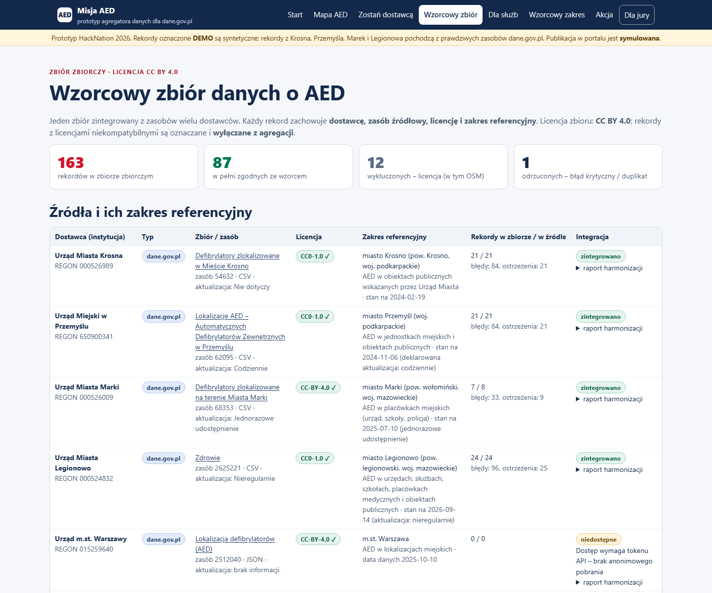
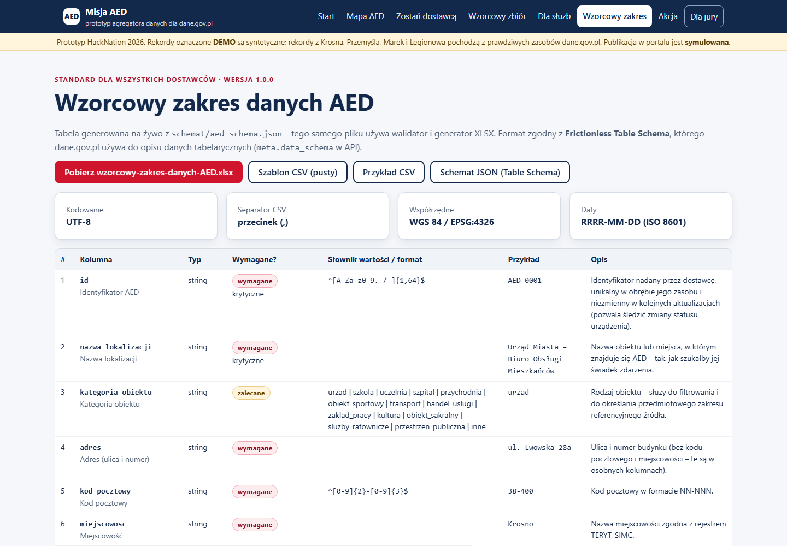
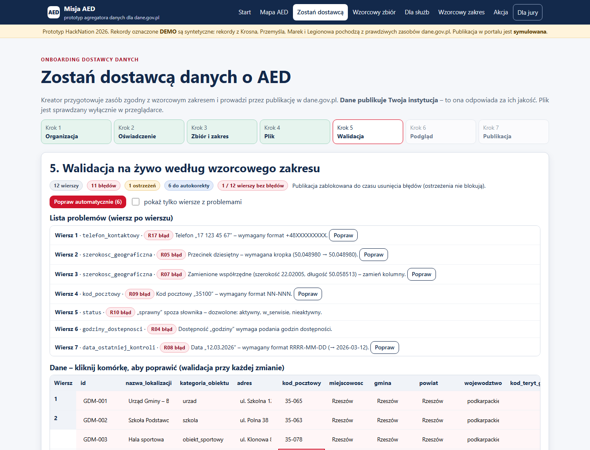
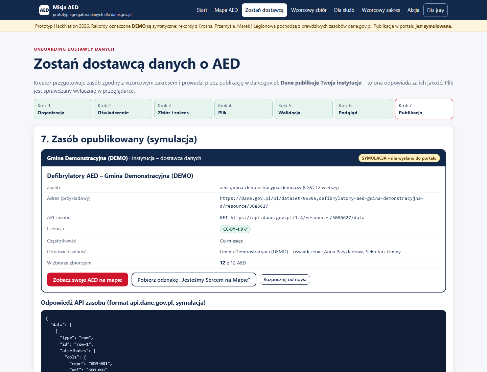
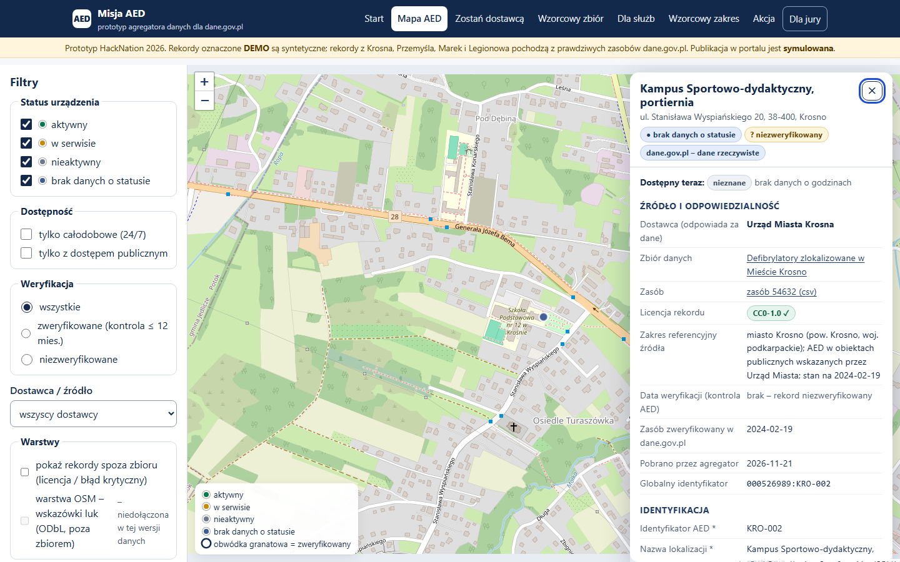
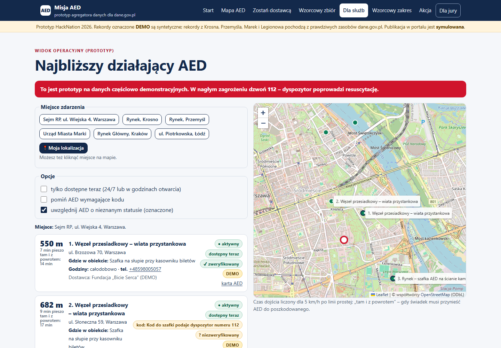
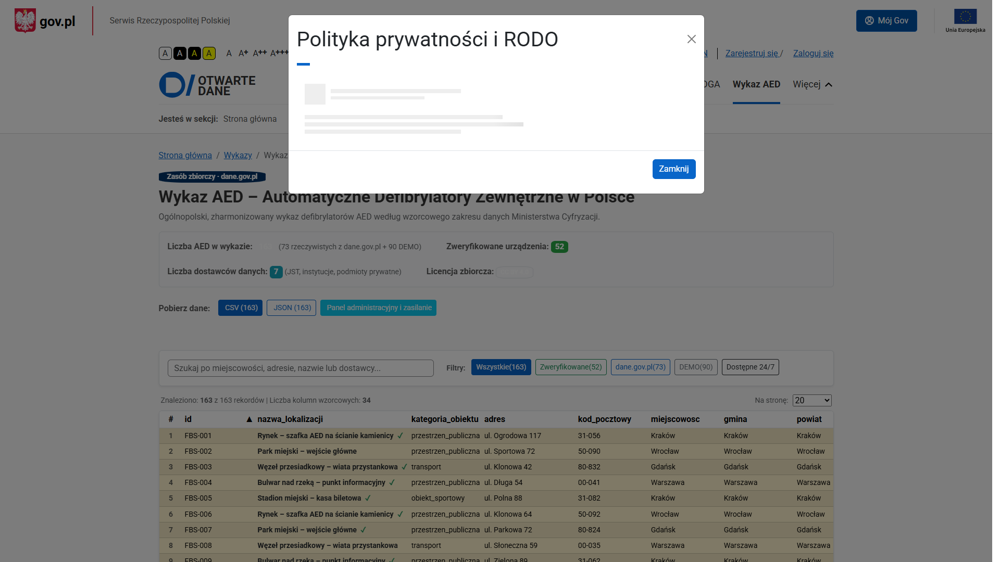
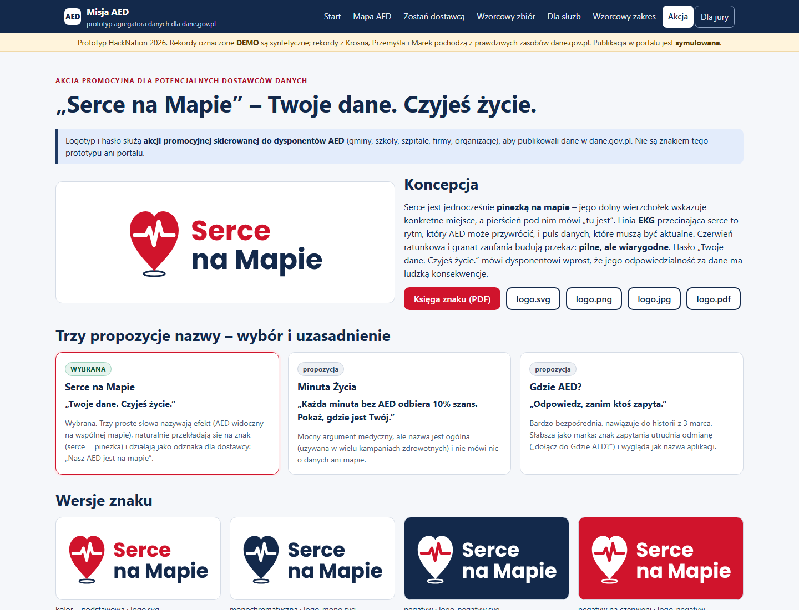
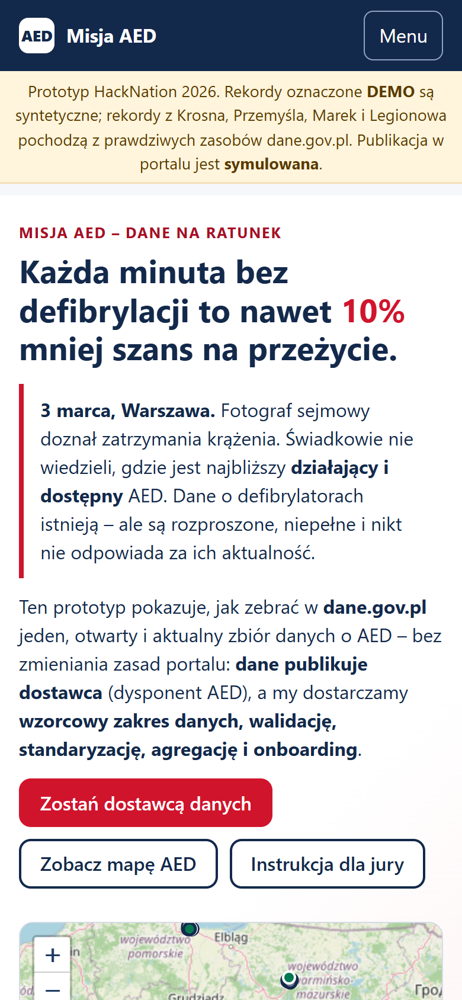
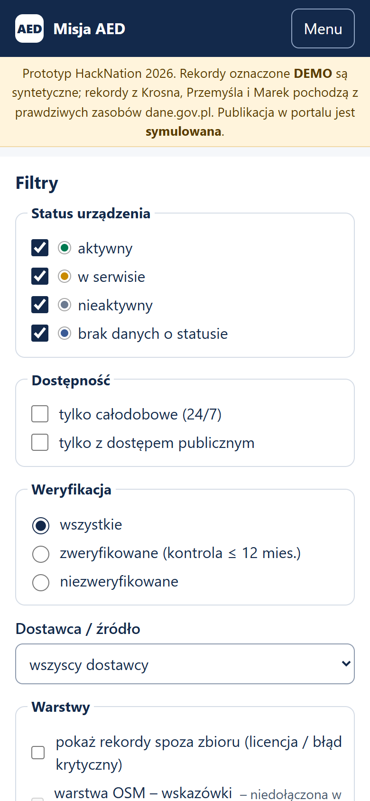

Jeden otwarty, aktualny zbiór danych o defibrylatorach w dane.gov.pl – publikowany przez dostawców, ujednolicony wzorcowym zakresem danych, sprawdzany walidatorem i łączony agregatorem. Plus akcja „Serce na Mapie”, która przekonuje dysponentów AED do udostępniania danych.
Zespół Zapachowy (1 osoba) · prototyp: prototyp/index.html
3 marca, Warszawa: fotograf sejmowy, zatrzymanie krążenia – świadkowie nie wiedzą, gdzie jest działający AED. Każda minuta bez defibrylacji to nawet 10% mniej szans na przeżycie.
Sprawdziliśmy w praktyce (API dane.gov.pl, 21.11.2026): zapytanie „defibrylator” zwraca 4 zbiory w całym portalu.

Zrzut z prototypu: rejestr źródeł z raportem harmonizacji każdego zasobu.
/1.4/resources/{id}/data, meta.data_schema (Table Schema).developer – każdy deweloper publikuje osobno, wg jednego wzorca. Przenosimy go na dysponentów AED.api.dane.gov.pl/1.4/resources/68355/data (JSON:API, headers_map, data_schema).

Walidacja na żywo: 11 typowych błędów (wzorowanych na prawdziwych zasobach), 6 z autokorektą.



Licencja zbioru CC BY 4.0, licencja źródłowa przy każdym rekordzie; CC BY-SA/NC/ND i ODbL (OSM) – oznaczone i wyłączone. Eksport: CSV, XLSX, JSON, GeoJSON, datapackage.json.
Działająca integracja z kodem źródłowym dane.gov.pl – nie tylko prototyp, ale kompletne osadzenie w architekturze portalu:
DgaInformationPointTableComponent i DgaService.getDgaAggregatedData() – ten sam wygląd, układ i zachowanie co oficjalne wykazy DGA portalu.schemat/aed-schema.json zintegrowany w tabeli (filtry na żywo, wyszukiwarka, sortowanie, paginacja, eksport CSV i JSON).create_main_dga_df() oraz zadaniu Celery create_main_dga_resource_task.Szczegółowy raport z integracji: WYKAZ-INTEGRACJA.md.

Zrzut ekranu: Wykaz AED uruchomiony lokalnie w portalu dane.gov.pl (localhost:4200).
Twoje dane. Czyjeś życie.
Serce jest pinezką: wierzchołek wskazuje miejsce, pierścień mówi „tu jest AED”, linia EKG to rytm, który AED przywraca – i puls aktualnych danych. Hasło mówi dysponentowi wprost: jego odpowiedzialność za dane ma ludzką konsekwencję.
| Propozycja | Hasło | Ocena |
|---|---|---|
| Serce na Mapie | Twoje dane. Czyjeś życie. | wybrana |
| Minuta Życia | Każda minuta bez AED odbiera 10% szans. | ogólna |
| Gdzie AED? | Odpowiedz, zanim ktoś zapyta. | słaba jako marka |

Księga znaku (PDF, 8 stron): kolory HEX/RGB/CMYK, pole ochronne, minimalna wielkość, wersje kolor/mono/negatyw, 8 zakazów. Mechanika: naklejka „Nasz AED jest na mapie”, odznaka do BIP, ranking gmin, tag SerceNaMapie.
aria-live, status nie tylko kolorem (ikona + tekst).prototyp/index.html otwarty z dysku (mapa z podkładem OSM przy dostępie do internetu).

Uruchomienie: otwórz prototyp/index.html (zero instalacji) lub w katalogu projektu py -m http.server 8080 → localhost:8080/prototyp/. Szczegóły: INSTRUKCJA_DLA_JURY.md i zakładka „Dla jury”.
#/dostawca?demo=bledy#/dostawca?demo=poprawny&krok=7#/sluzby?miejsce=sejmOgraniczenia: publikacja w dane.gov.pl jest symulowana (celowo – publikuje dostawca); 90 rekordów od 3 dostawców to DEMO (syntetyczne, oznaczone); warstwa OSM to tylko konektor bez danych (ODbL niezgodna z CC BY 4.0); agregacja z dane.gov.pl uruchamiana skryptem, nie cyklicznie; brak testów z czytnikiem ekranu. Pełna lista: OGRANICZENIA.md.
Następne kroki: pilotaż z 3 gminami, harwester XML/DCAT-AP dla dużych dysponentów, cykliczny agregator na API portalu, ranking gmin w akcji.
← / → przewijanie slajdów · druk do PDF: Ctrl+P